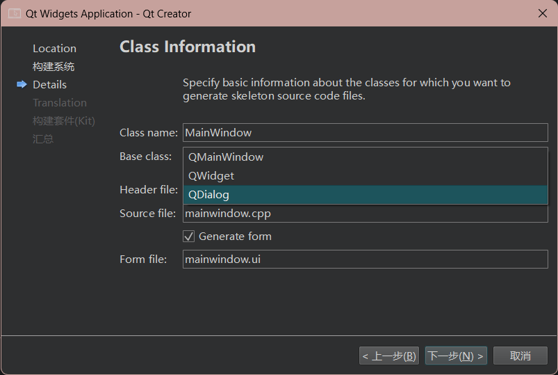
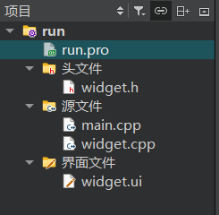
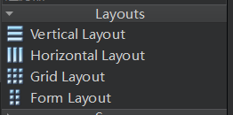
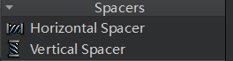
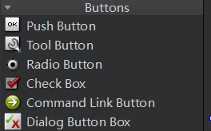
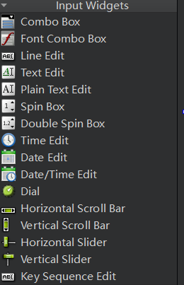
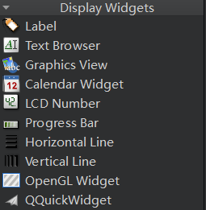
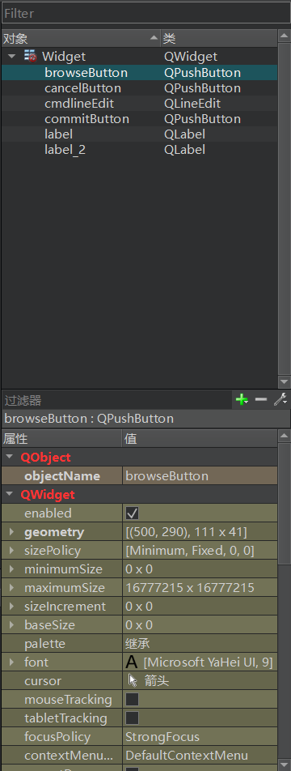

[2] 认识QTCreator
1. 创建工程
在Qt Creator中创建一个桌面项目时，通常会有三个常见的选项，分别是 QMainWindow、QWidget 和 QDialog，它们分别代表不同类型的主窗口或对话框。以下是每个选项的简要说明：
-
QMainWindow：
- 如果你的应用程序需要一个典型的主窗口，通常有菜单栏、工具栏、状态栏和中央工作区等，那么选择
QMainWindow 是合适的。 - 这种选项适用于创建传统的桌面应用程序，例如文本编辑器、绘图应用程序等。
-
QWidget：
-
如果你的应用程序只需要一个基本的窗口，并且没有特定的主窗口结构（如菜单栏等），那么选择
QWidget 是合适的。 - 这种选项适用于创建自定义的窗口，你可以在其中添加各种控件和自定义界面元素。
-
QDialog：
-
如果你的应用程序需要一个对话框，通常用于短期交互或信息提示，那么选择
QDialog 是合适的。 - 对话框通常用于获取用户输入、显示警告或提示信息等。
- 如果你的应用程序需要一个典型的主窗口，通常有菜单栏、工具栏、状态栏和中央工作区等，那么选择

2. 工程项目结构
工程名.pro是工程配置文件，一般不需要手动配置 xxx.h头文件 xxx.cpp源文件 xxx.ui界面文件

详细介绍：
-
工程名.pro：
-
.pro 文件是Qt项目的配置文件，其中包含有关项目的元信息，编译选项，依赖关系等信息。 - 通常，你可以在
.pro 文件中配置所需的Qt模块、库以及其他编译和构建设置。 -
xxx.h 头文件：
-
.h 文件通常包含类的声明，包括类的成员变量和函数原型。 - 头文件用于描述类的接口，以便其他代码可以访问和使用类的功能。
-
xxx.cpp 源文件：
-
.cpp 文件通常包含与头文件中声明的类相关的实现代码。 - 这些文件包含了类的方法和函数的具体实现，以及其他辅助函数。
-
xxx.ui 界面文件：
-
.ui 文件是Qt的用户界面文件，通常由Qt Designer或Qt Creator中的界面设计器创建。 - 这些文件包含了窗口、对话框或部件的布局、控件和信号槽等界面元素的描述。
- 在编译时，Qt会将
.ui 文件转换为相应的C++代码，以便在程序中使用。
-
3. 设计界面
3.1 Layouts 布局

-
水平布局（Horizontal Layout） ：
- 水平布局将控件水平排列，从左到右。
- 适合需要将控件横向排列的情况，如工具栏、按钮组、输入字段等。
- 使用QHBoxLayout或在Qt Designer中选择"水平布局"工具来创建水平布局。
-
垂直布局（Vertical Layout） ：
-
垂直布局将控件垂直排列，从上到下。
- 适合需要将控件纵向排列的情况，如窗口的主要布局、表单、选项卡等。
- 使用QVBoxLayout或在Qt Designer中选择"垂直布局"工具来创建垂直布局。
-
网格布局（Grid Layout） ：
-
网格布局将控件排列成一个网格，每个控件占据一个单元格。
- 适合需要将控件以表格形式排列的情况，如表格、网格按钮、图形界面编辑器等。
- 使用QGridLayout或在Qt Designer中选择"网格布局"工具来创建网格布局。
-
表单布局（Form Layout） ：
-
表单布局用于创建表单式的布局，通常用于输入表单等。
- 控件对齐在两列中，左侧是标签，右侧是输入字段。
- 使用QFormLayout或在Qt Designer中选择"表单布局"工具来创建表单布局。
3.2 Spacers 间隔

Qt Creator提供了两种常见的间隔（Spacer）类型，用于在Qt应用程序的用户界面中管理和控制布局。这些间隔可以帮助你调整控件之间的间距和位置，以确保用户界面在不同大小的窗口和屏幕分辨率下都能够正常工作。
-
水平间隔（Horizontal Spacer） ：
- 水平间隔是一个水平方向上的占位符，通常用于水平布局中。
- 它可以在水平布局中用于增加或调整控件之间的水平间距。
- 在Qt Designer中，你可以将水平间隔添加到水平布局中，然后通过拖动它来调整水平间距。
-
垂直间隔（Vertical Spacer） ：
-
垂直间隔是一个垂直方向上的占位符，通常用于垂直布局中。
- 它可以在垂直布局中用于增加或调整控件之间的垂直间距。
- 在Qt Designer中，你可以将垂直间隔添加到垂直布局中，然后通过拖动它来调整垂直间距。
3.3 Buttons 按钮

-
QPushButton（Push Button） ：
-
QPushButton 是用于触发点击事件的标准按钮。 - 它通常用于执行操作，例如提交表单、启动功能或执行特定任务。
-
QToolButton（Tool Button） ：
-
QToolButton 是一种特殊的按钮，通常用于工具栏中。 - 它可以显示图标、文本或两者结合，用于快速访问应用程序的功能。
-
QRadioButton（Radio Button） ：
-
QRadioButton 是用于单选框组的按钮。 - 它们通常用于选项卡或选项列表，用户只能选择其中一个选项。
-
QCheckBox（Check Box） ：
-
QCheckBox 是用于复选框的按钮。 - 它们通常用于允许用户选择多个选项，可以选择或取消选择。
-
QCommandLinkButton（Command Link Button） ：
-
QCommandLinkButton 是用于表示重要操作的按钮。 - 它们通常用于提供更详细的描述和说明，并可用于启动相关操作。
-
QAbstractButton（Abstract Button） ：
-
QAbstractButton 是一个抽象的按钮类，通常用于创建自定义按钮。 - 它是其他按钮控件的基类，可以用于自定义按钮的外观和行为。
-
3.4 Input Widgets 输入控件

输入控件（Input Widgets）是Qt中的一组用于接受用户输入的用户界面元素。它们允许用户输入文本、数字、日期、选择选项等，并提供了丰富的交互性和验证功能。以下是一些常见的Qt输入控件：
-
QLineEdit：
-
QLineEdit 是一个单行文本输入框，用于接受用户输入的短文本。 - 它支持文本输入、剪切、复制和粘贴，还可以设置输入验证和掩码。
-
QTextEdit：
-
QTextEdit 是一个多行文本输入框，用于接受用户输入的长文本或富文本。 - 它支持多行文本输入、格式化文本、插入图片和链接等。
-
QPlainTextEdit：
-
QPlainTextEdit 是用于接受纯文本输入的多行文本框，不支持富文本。 - 它适用于显示和编辑普通文本，如代码或日志。
-
QSpinBox 和 QDoubleSpinBox：
-
QSpinBox 用于接受整数输入，用户可以通过上下箭头或手动输入来调整数值。 -
QDoubleSpinBox 用于接受浮点数输入，类似于QSpinBox，但支持浮点数。 -
QSlider：
-
QSlider 是一个滑块控件，用于选择在一定范围内的整数值。 - 它允许用户通过拖动滑块来选择值。
-
QComboBox：
-
QComboBox 是一个组合框，用户可以从下拉列表中选择一个选项。 - 它通常用于选择一个选项，例如选择国家、城市或其他列表中的项目。
-
QCheckBox 和 QRadioButton：
-
QCheckBox 用于选择或取消选择一个或多个选项。 -
QRadioButton 用于单选按钮组，用户只能选择一个选项。 -
QDateEdit 和 QTimeEdit：
-
QDateEdit 用于选择日期。 -
QTimeEdit 用于选择时间。 - 它们可以用于日期和时间的输入和选择。
-
QCalendarWidget：
-
QCalendarWidget 是一个日历控件，允许用户选择日期。 - 它显示一个月份的日历，用户可以选择日期并进行导航。
-
3.5 Display Widgets 显示控件

显示控件（Display Widgets）是Qt中的一组用于显示信息或数据的用户界面元素。它们通常用于向用户呈现静态或动态的文本、图像、图表、进度条等内容。以下是一些常见的Qt显示控件：
-
QLabel：
-
QLabel 是用于显示文本或图像的标签控件。 - 它可以显示纯文本、富文本、图像或者同时显示文本和图像。
-
QPlainTextEdit：
-
QPlainTextEdit 可以不可编辑地显示多行文本内容。 - 它通常用于显示代码、日志或其他大段文本。
-
QTextBrowser：
-
QTextBrowser 是一个富文本文本查看器，允许显示和导航富文本内容。 - 用户可以点击链接并查看HTML内容。
-
QTextEdit：
-
QTextEdit 不仅可以用于文本输入，还可以用于显示富文本内容。 - 它支持显示、编辑和格式化富文本，包括字体、颜色、图像等。
-
QProgressBar：
-
QProgressBar 是一个进度条控件，用于表示任务的进度。 - 它通常用于显示任务的完成百分比。
-
QScrollBar：
-
QScrollBar 是一个滚动条控件，用于滚动显示内容。 - 它通常用于显示大量内容的部分视图，如文本、图像或图表。
-
QDial：
-
QDial 是一个旋转式的拨号控件，通常用于选择数值。 - 用户可以旋转拨号来选择数值。
-
QLCDNumber：
-
QLCDNumber 是用于显示数字的液晶数字显示控件。 - 它通常用于显示数值、计数器或计时器的值。
-
QFrame：
-
QFrame 是一个通用的框架控件，可用于容纳其他控件或将其用作容器。 - 它可以用来创建自定义的显示区域。
-
QGraphicsView：
-
QGraphicsView 是一个用于显示图形项（Graphics Items）的视图控件。 - 它通常用于创建自定义的图形和绘图应用程序。
-
3.6 其他控件
在Qt中，"Item Views" 和 "Item Widgets" 是两种用于显示和处理数据的重要机制。它们通常用于创建各种复杂的用户界面，如表格、列表、树形视图等。
-
Item Views：
"Item Views" 是Qt中一组用于显示和编辑数据的视图控件的集合，包括但不限于以下几种：- QListView：用于显示项目的列表视图，可以用于创建类似文件浏览器的界面。
- QTableView：用于以表格形式显示数据的表格视图，支持多列和多行，类似于电子表格。
- QTreeView：用于显示层次结构数据的树形视图，支持展开和折叠节点，常用于文件系统导航和树形数据显示。
- QColumnView：用于以列的形式显示数据的列视图，通常用于显示多列数据。
这些视图提供了用于显示和交互的丰富功能，如排序、过滤、编辑、选择、拖放等。你可以使用模型/视图框架（Model-View Framework）来将数据与视图分离，从而实现数据的可视化表示。 2. Item Widgets：
"Item Widgets" 是在Qt中用于自定义项（item）的机制，通常与"Item Views"结合使用。它允许你在视图中显示自定义的QWidget，而不仅仅是文本或图像。这对于创建复杂的自定义项非常有用，每个项可以包含多个控件，例如按钮、文本框、复选框等。
"Item Widgets" 通常在 "QAbstractItemView" 的子类中使用，例如 "QListView" 或 "QTableView"。你可以使用 "setItemWidget" 或 "setIndexWidget" 方法将自定义QWidget分配给特定的项。
3.7 修改控件属性
